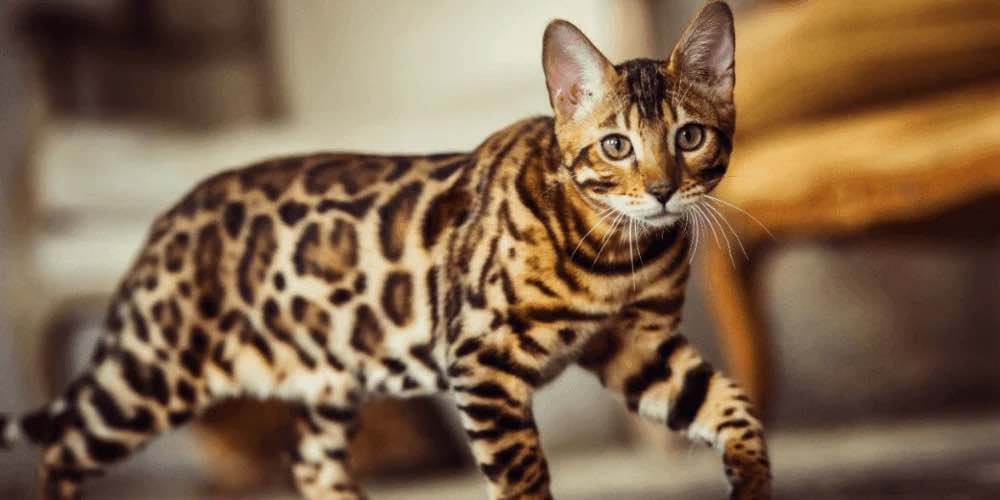
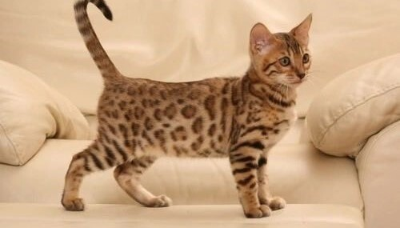
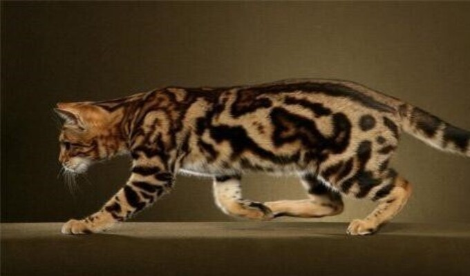
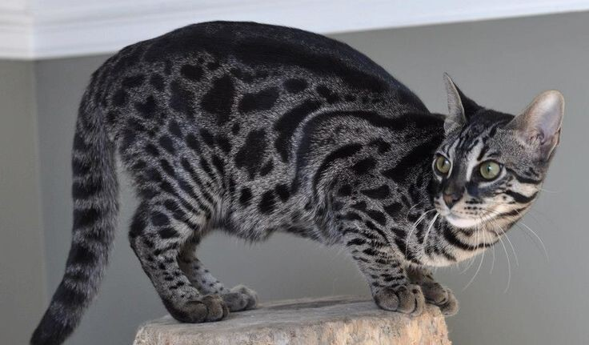

Bengal cats are eye-catching and exotic athletes that make you feel like you own your very own leopard. These intelligent cats are growing in popularity because of their playful nature and gorgeous looks. Bengal cats are beautiful, wild-looking, and smart cats. This hybrid cat breed is growing in popularity due to their pattern and personality, and they stay about the same size as a large domestic house cat. Bengal cats were developed by breeding Asian leopard cats (Felis bengalensis) with domestic cats like the Abyssinian, Egyptian Mau, or American shorthair. Read on to learn all about the Bengal cat breed.
Bengal Cat: Breed Profile, Personality Traits & Care Guide
Learn all about Bengal cats—their looks, personality, and how to care for them.
About the Bengal Cat

Types of Bengal Cats

Bengal Brown Spotted

Bengal Snow Leopard

Bengal Marble

Charcoal Bengal Cat
How to Care for a Bengal Cat
Grooming Needs
Bengal cats are low-maintenance, short-haired cats. Weekly brushing with a soft bristle brush is enough. They generally don't require baths or intensive grooming.
Exercise & Enrichment
Bengals need daily play sessions or walks to stay active. Provide them with puzzle toys, a cat tree, or interactive games with their human to keep them engaged.
Outdoors or Indoors
Bengals thrive indoors as long as they have enough stimulation and attention. They can also be great outdoor cats when supervised or in a safe environment.
Diet
Bengals have high protein requirements and do best on a meat-rich diet. Avoid plant-based foods. Feed them two to three times a day for optimal health.